Class wibox.layout.grid
A grid layout.
Widgets spanning several columns or rows cannot be included using the declarative system. Instead, create the grid layout and call the add_widget_at method.
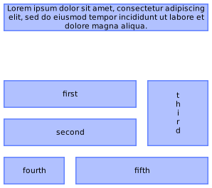
local l = wibox.widget { homogeneous = true, spacing = 5, min_cols_size = 10, min_rows_size = 10, layout = wibox.layout.grid, } l:add_widget_at(first , 2, 1, 1, 2) l:add_widget_at(second, 3, 1, 1, 2) l:add_widget_at(third , 2, 3, 2, 1) l:add_widget_at(fourth, 4, 1, 1, 1) l:add_widget_at(fifth , 4, 2, 1, 2) l:insert_row(1) l:add_widget_at(lorem, 1, 1, 1, 3)
Using the declarative system, widgets are automatically added next to each other spanning only one cell.
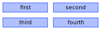
Usage:
wibox.widget {
generic_widget( 'first' ),
generic_widget( 'second' ),
generic_widget( 'third' ),
generic_widget( 'fourth' ),
forced_num_cols = 2,
forced_num_rows = 2,
homogeneous = true,
expand = true,
layout = wibox.layout.grid
}
Info:
- Copyright: 2017 getzze
- Author: getzze
Functions
| wibox.layout.grid ([orientation="y"]) | Return a new grid layout. |
| wibox.layout.grid.horizontal (forced_num_rows, ...) | Return a new horizontal grid layout. |
| wibox.layout.grid.vertical (forced_num_cols, ...) | Return a new vertical grid layout. |
Object properties
| orientation | Set the preferred orientation of the grid layout. |
| superpose | Allow to superpose widgets in the same cell. |
| forced_num_rows | Force the number of rows of the layout. |
| forced_num_cols | Force the number of columns of the layout. |
| min_cols_size | Set the minimum size for the columns. |
| min_rows_size | Set the minimum size for the rows. |
| horizontal_spacing | The spacing between columns. |
| vertical_spacing | The spacing between rows. |
| spacing | The spacing between rows and columns. |
| horizontal_expand | Controls if the columns are expanded to use all the available width. |
| vertical_expand | Controls if the rows are expanded to use all the available height. |
| expand | Controls if the columns/rows are expanded to use all the available space. |
| horizontal_homogeneous | Controls if the columns all have the same width or if the width of each column depends on the content. |
| vertical_homogeneous | Controls if the rows all have the same height or if the height of each row depends on the content. |
| homogeneous | Controls if the columns/rows all have the same size or if the size depends on the content. |
| forced_height | Force a widget height. |
| forced_width | Force a widget width. |
| opacity | The widget opacity (transparency). |
| visible | The widget visibility. |
Signals
| widget::reset | When the layout is reset. |
| widget::layout_changed | When the layout (size) change. |
| widget::redraw_needed | When the widget content changed. |
| button::press | When a mouse button is pressed over the widget. |
| button::release | When a mouse button is released over the widget. |
| mouse::enter | When the mouse enter a widget. |
| mouse::leave | When the mouse leave a widget. |
Tables
| wibox.layout.grid.position | Child widget position. |
Methods
Functions
Methods- wibox.layout.grid ([orientation="y"])
-
Return a new grid layout.
A grid layout sets widgets in a grids of custom number of rows and columns.
- orientation string The preferred grid extension direction. (default "y")
- wibox.layout.grid.horizontal (forced_num_rows, ...)
-
Return a new horizontal grid layout.
Each new widget is positioned below the last widget on the same column up to forced_num_rows. Then the next column is filled, creating it if it doesn’t exist.
- forced_num_rows
number or nil
Forced number of rows (
nilfor automatic). - ... widget Widgets that should be added to the layout.
- forced_num_rows
number or nil
Forced number of rows (
- wibox.layout.grid.vertical (forced_num_cols, ...)
-
Return a new vertical grid layout.
Each new widget is positioned left of the last widget on the same row up to forced_num_cols. Then the next row is filled, creating it if it doesn’t exist.
- forced_num_cols
number or nil
Forced number of columns (
nilfor automatic). - ... widget Widgets that should be added to the layout.
- forced_num_cols
number or nil
Forced number of columns (
Object properties
- orientation
-
Set the preferred orientation of the grid layout.
Allowed values are “horizontal” and “vertical”. When calling get_next_empty, empty cells are browsed differently:
for “horizontal”, the grid can be extended horizontally. The current column is filled first; if no empty cell is found up to forced_num_rows, the next column is filled, creating it if it does not exist.
for “vertical”, the grid can be extended vertically. The current row is filled first; if no empty cell is found up to forced_num_cols, the next row is filled, creating it if it does not exist.
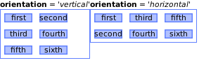
Usage example output:
l = wibox.layout { forced_num_cols = 2, forced_num_rows = 2, homogeneous = true, layout = wibox.layout.grid } l:set_orientation('vertical') -- change to 'horizontal' l:add(...)Type:
- string Preferred orientation: “horizontal” or “vertical”. (default "vertical")
- superpose
-
Allow to superpose widgets in the same cell.
If false, check before adding a new widget if it will superpose with another
widget and prevent from adding it.
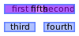
Type:
- boolean (default false)
- forced_num_rows
-
Force the number of rows of the layout.
Type:
- number
number or nil
Forced number of rows (
nilfor automatic). (default nil)
- number
number or nil
Forced number of rows (
- forced_num_cols
-
Force the number of columns of the layout.
Type:
- number
number or nil
Forced number of columns (
nilfor automatic). (default nil)
- number
number or nil
Forced number of columns (
- min_cols_size
-
Set the minimum size for the columns.
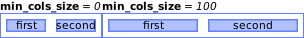
Type:
- number Minimum size of the columns. (default 0)
- min_rows_size
-
Set the minimum size for the rows.
Type:
- number Minimum size of the rows. (default 0)
- horizontal_spacing
-
The spacing between columns.
see spacing
Type:
- number The spacing (default 0)
- vertical_spacing
-
The spacing between rows.
see spacing
Type:
- number The spacing (default 0)
- spacing
-
The spacing between rows and columns.
Set both horizontal_spacing and vertical_spacing to the same value.
Get the value horizontal_spacing or vertical_spacing defined by the
preferred orientation.
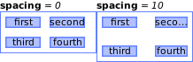
Type:
- number The spacing (default 0)
- horizontal_expand
-
Controls if the columns are expanded to use all the available width.
see expand
Type:
- boolean Expand the grid into the available space (default false)
- vertical_expand
-
Controls if the rows are expanded to use all the available height.
see expand
Type:
- boolean Expand the grid into the available space (default false)
- expand
-
Controls if the columns/rows are expanded to use all the available space.
Set both horizontal_expand and vertical_expand to the same value.
Get the value horizontal_expand or vertical_expand defined by the
preferred orientation.
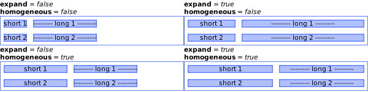
Type:
- boolean Expand the grid into the available space (default false)
- horizontal_homogeneous
-
Controls if the columns all have the same width or if the width of each
column depends on the content.
see homogeneous
Type:
- boolean All the columns have the same width. (default true)
- vertical_homogeneous
-
Controls if the rows all have the same height or if the height of each row
depends on the content.
see homogeneous
Type:
- boolean All the rows have the same height. (default true)
- homogeneous
-
Controls if the columns/rows all have the same size or if the size depends
on the content.
Set both horizontal_homogeneous and vertical_homogeneous to the same value.
Get the value horizontal_homogeneous or vertical_homogeneous defined
by the preferred orientation.
Type:
- boolean All the columns/rows have the same size. (default true)
- forced_height
-
Force a widget height.
Type:
- height
number or nil
The height (
nilfor automatic)
- height
number or nil
The height (
- forced_width
-
Force a widget width.
Type:
- width
number or nil
The width (
nilfor automatic)
- width
number or nil
The width (
- opacity
-
The widget opacity (transparency).
Type:
- opacity number The opacity (between 0 and 1) (default 1)
- visible
-
The widget visibility.
Type:
- boolean
Signals
- widget::reset
- When the layout is reset. This signal is emitted when the layout has been reset, all the widgets removed and the row and column counts reset.
- widget::layout_changed
-
When the layout (size) change.
This signal is emitted when the previous results of
:layout()and:fit()are no longer valid. Unless this signal is emitted,:layout()and:fit()must return the same result when called with the same arguments.See also:
- widget::redraw_needed
-
When the widget content changed.
This signal is emitted when the content of the widget changes. The widget will
be redrawn, it is not re-layouted. Put differently, it is assumed that
:layout()and:fit()would still return the same results as before.See also:
- button::press
-
When a mouse button is pressed over the widget.
Arguments:
- lx number The horizontal position relative to the (0,0) position in the widget.
- ly number The vertical position relative to the (0,0) position in the widget.
- button number The button number.
- mods table The modifiers (mod4, mod1 (alt), Control, Shift)
- find_widgets_result The entry from the result of
wibox.drawable:find_widgets for the position that the mouse hit.
- drawable wibox.drawable The drawable containing the widget.
- widget widget The widget being displayed.
- hierarchy wibox.hierarchy The hierarchy managing the widget’s geometry.
- x number An approximation of the X position that the widget is visible at on the surface.
- y number An approximation of the Y position that the widget is visible at on the surface.
- width number An approximation of the width that the widget is visible at on the surface.
- height number An approximation of the height that the widget is visible at on the surface.
- widget_width number The exact width of the widget in its local coordinate system.
- widget_height number The exact height of the widget in its local coordinate system.
See also:
- button::release
-
When a mouse button is released over the widget.
Arguments:
- lx number The horizontal position relative to the (0,0) position in the widget.
- ly number The vertical position relative to the (0,0) position in the widget.
- button number The button number.
- mods table The modifiers (mod4, mod1 (alt), Control, Shift)
- find_widgets_result The entry from the result of
wibox.drawable:find_widgets for the position that the mouse hit.
- drawable wibox.drawable The drawable containing the widget.
- widget widget The widget being displayed.
- hierarchy wibox.hierarchy The hierarchy managing the widget’s geometry.
- x number An approximation of the X position that the widget is visible at on the surface.
- y number An approximation of the Y position that the widget is visible at on the surface.
- width number An approximation of the width that the widget is visible at on the surface.
- height number An approximation of the height that the widget is visible at on the surface.
- widget_width number The exact width of the widget in its local coordinate system.
- widget_height number The exact height of the widget in its local coordinate system.
See also:
- mouse::enter
-
When the mouse enter a widget.
Arguments:
- find_widgets_result The entry from the result of
wibox.drawable:find_widgets for the position that the mouse hit.
- drawable wibox.drawable The drawable containing the widget.
- widget widget The widget being displayed.
- hierarchy wibox.hierarchy The hierarchy managing the widget’s geometry.
- x number An approximation of the X position that the widget is visible at on the surface.
- y number An approximation of the Y position that the widget is visible at on the surface.
- width number An approximation of the width that the widget is visible at on the surface.
- height number An approximation of the height that the widget is visible at on the surface.
- widget_width number The exact width of the widget in its local coordinate system.
- widget_height number The exact height of the widget in its local coordinate system.
See also:
- find_widgets_result The entry from the result of
wibox.drawable:find_widgets for the position that the mouse hit.
- mouse::leave
-
When the mouse leave a widget.
Arguments:
- find_widgets_result The entry from the result of
wibox.drawable:find_widgets for the position that the mouse hit.
- drawable wibox.drawable The drawable containing the widget.
- widget widget The widget being displayed.
- hierarchy wibox.hierarchy The hierarchy managing the widget’s geometry.
- x number An approximation of the X position that the widget is visible at on the surface.
- y number An approximation of the Y position that the widget is visible at on the surface.
- width number An approximation of the width that the widget is visible at on the surface.
- height number An approximation of the height that the widget is visible at on the surface.
- widget_width number The exact width of the widget in its local coordinate system.
- widget_height number The exact height of the widget in its local coordinate system.
See also:
- find_widgets_result The entry from the result of
wibox.drawable:find_widgets for the position that the mouse hit.
Tables
- wibox.layout.grid.position
-
Child widget position. Return of get_widget_position.
Fields:
- row Top row index
- col Left column index
- row_span Number of rows to span
- col_span Number of columns to span
Methods
- wibox.layout.grid:get_dimension ()
-
Get the number of rows and columns occupied by the widgets in the grid.
Returns:
-
number,number
The number of rows and columns
- wibox.layout.grid:get_next_empty ([hint_row=1[, hint_column=1]])
-
Find the next available cell to insert a widget.
The grid is browsed according to the orientation.
- hint_row number The row coordinate of the last occupied cell. (default 1)
- hint_column number The column coordinate of the last occupied cell. (default 1)
Returns:
-
number,number The row,column coordinate of the next empty cell
- wibox.layout.grid:add (...)
-
Add some widgets to the given grid layout.
The widgets are assumed to span one cell
- ... Widgets that should be added (must at least be one)
- wibox.layout.grid:add_widget_at (child, row, col[, row_span=1[, col_span=1]])
-
Add a widget to the grid layout at specific coordinate.
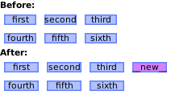
Usage example output:
l:add_widget_at(new, 1, 4, 1, 1)- child Widget that should be added
- row number Row number for the top left corner of the widget
- col number Column number for the top left corner of the widget
- row_span number The number of rows the widget spans. (default 1)
- col_span number The number of columns the widget spans. (default 1)
Returns:
-
boolean
index If the operation is successful
- wibox.layout.grid:remove (...)
-
Remove one or more widgets from the layout.
- ... Widgets that should be removed (must at least be one)
Returns:
-
boolean
If the operation is successful
- wibox.layout.grid:remove_widgets_at (row, col[, row_span=1[, col_span=1]])
-
Remove widgets at the coordinates.
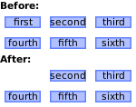
Usage example output:
l:remove_widgets_at(1,1)- row number The row coordinate of the widget to remove
- col number The column coordinate of the widget to remove
- row_span number The number of rows the area to remove spans. (default 1)
- col_span number The number of columns the area to remove spans. (default 1)
Returns:
-
boolean
If the operation is successful (widgets found)
- wibox.layout.grid:get_widget_position (widget)
-
Return the coordinates of the widget.
- widget The widget
Returns:
- wibox.layout.grid:get_widgets_at (row, col[, row_span=1[, col_span=1]])
-
Return the widgets at the coordinates.
- row number The row coordinate of the widget
- col number The column coordinate of the widget
- row_span number The number of rows to span. (default 1)
- col_span number The number of columns to span. (default 1)
Returns:
-
table
The widget(s) found at the specific coordinates, nil if no widgets found
- wibox.layout.grid:replace_widget (old, new)
-
Replace old widget by new widget, spanning the same columns and rows.
- old The widget to remove
- new The widget to add
Returns:
-
boolean
If the operation is successful (widget found)
- wibox.layout.grid:insert_column (index)
-
Insert column at index.
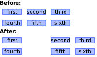
Usage example output:
l:insert_column(2)- index
number or nil
Insert the new column at index. If
nil, the column is added at the end.
Returns:
-
number
The index of the inserted column
- index
number or nil
Insert the new column at index. If
- wibox.layout.grid:extend_column (index)
-
Extend column at index.
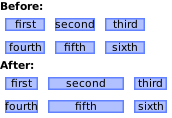
Usage example output:
l:extend_column(2)- index
number or nil
Extend the column at index. If
nil, the last column is extended.
Returns:
-
number
The index of the extended column
- index
number or nil
Extend the column at index. If
- wibox.layout.grid:remove_column (index)
-
Remove column at index.
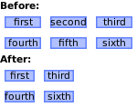
Usage example output:
l:remove_column(2)- index
number or nil
Remove column at index. If
nil, the last column is removed.
Returns:
-
number
The index of the removed column
- index
number or nil
Remove column at index. If
- wibox.layout.grid:insert_row (index)
-
Insert row at index.
see insert_column
- index
number or nil
Insert the new row at index. If
nil, the row is added at the end.
Returns:
-
number
The index of the inserted row
- index
number or nil
Insert the new row at index. If
- wibox.layout.grid:extend_row (index)
-
Extend row at index.
see extend_column
- index
number or nil
Extend the row at index. If
nil, the last row is extended.
Returns:
-
number
The index of the extended row
- index
number or nil
Extend the row at index. If
- wibox.layout.grid:remove_row (index)
-
Remove row at index.
see remove_column
- index
number or nil
Remove row at index. If
nil, the last row is removed.
Returns:
-
number
The index of the removed row
- index
number or nil
Remove row at index. If
- wibox.layout.grid:reset ()
-
Reset the grid layout.
Remove all widgets and reset row and column counts
Signal: widget::reset
- wibox.layout.grid:get_all_children ()
-
Get all direct and indirect children widgets.
This will scan all containers recursively to find widgets
Warning: This method it prone to stack overflow id the widget, or any of its
children, contain (directly or indirectly) itself.
Returns:
-
table
The children
- wibox.layout.grid:setup (args)
-
Set a declarative widget hierarchy description.
See The declarative layout system
- args An array containing the widgets disposition
- wibox.layout.grid:buttons (_buttons)
-
Set/get a widget’s buttons.
- _buttons The table of buttons that should bind to the widget.
- wibox.layout.grid:emit_signal_recursive (signal_name, ...)
-
Emit a signal and ensure all parent widgets in the hierarchies also
forward the signal. This is useful to track signals when there is a dynamic
set of containers and layouts wrapping the widget.
- signal_name string
- ... Other arguments
- wibox.layout.grid:emit_signal (name, ...)
-
Emit a signal.
- name string The name of the signal.
- ... Extra arguments for the callback functions. Each connected function receives the object as first argument and then any extra arguments that are given to emit_signal().
- wibox.layout.grid:connect_signal (name, func)
-
Connect to a signal.
- name string The name of the signal.
- func function The callback to call when the signal is emitted.
- wibox.layout.grid:weak_connect_signal (name, func)
-
Connect to a signal weakly.
This allows the callback function to be garbage collected and automatically disconnects the signal when that happens.
Warning: Only use this function if you really, really, really know what you are doing.
- name string The name of the signal.
- func function The callback to call when the signal is emitted.